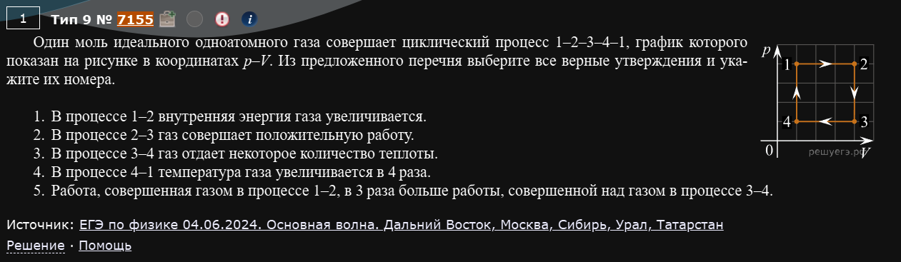
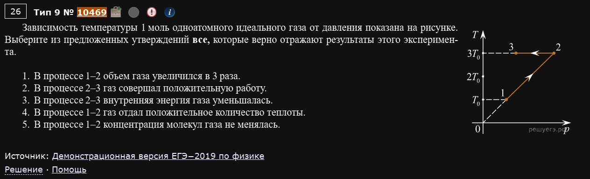
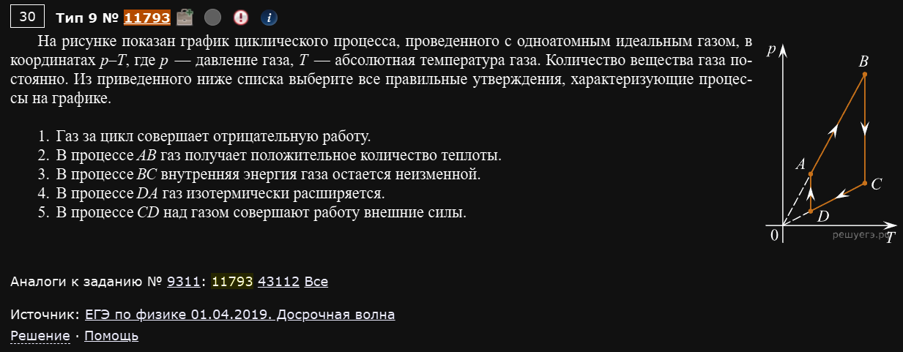
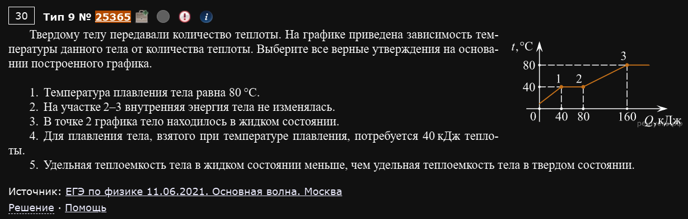
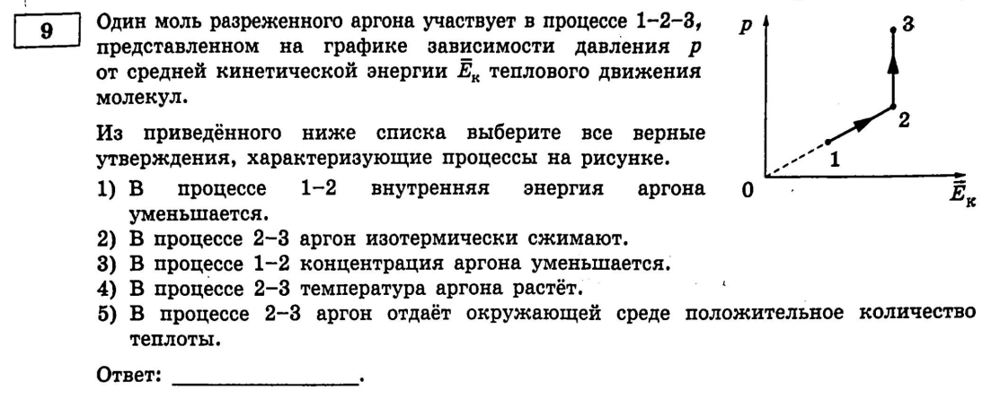
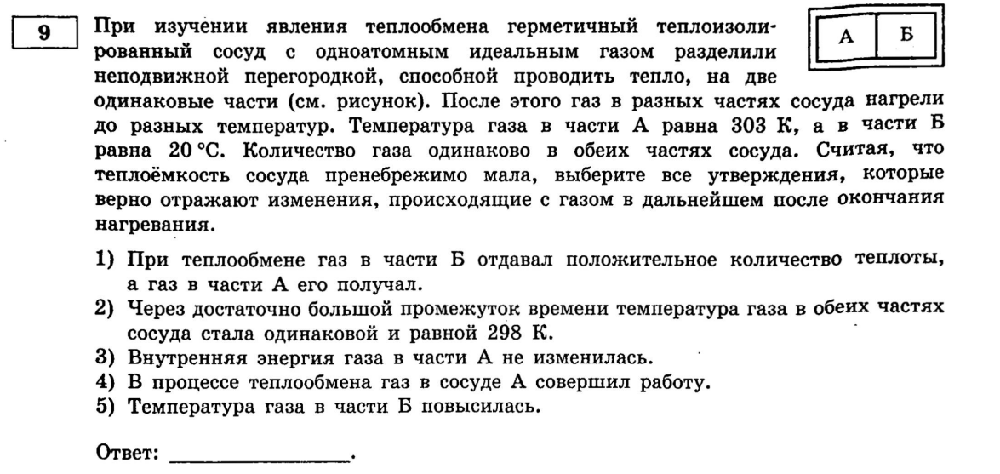

Разнообразие
Поскольку завершающие задания невероятно разнообразные по ситуациям и темам, которые в них задействованы - здесь разбираются только те задачи, благодаря которым у вас сформируется понимание про что вообще этот номер.
№9. МКТ и термодинамика: анализ физических процессов
Тот же формат, что и в номере 5 (выберите все верные утверждения, 2-3 из 5), только материал теперь берётся из молекулярной физики и термодинамики: газовые законы, первый закон термодинамики, внутренняя энергия, фазовые переходы. Почти всегда даётся график в каких-то осях — и первым делом нужно понять, какой физический процесс на нём нарисован.
На Решу ЕГЭ для этого формата на удивление мало задач с недавних реальных волн (в основном это старые демоверсии 2016-2019 годов или вообще без указанного источника) — поэтому здесь особенно пригодилась Демидова.
Пример 1) (Решу ЕГЭ №7155 — ЕГЭ по физике 04.06.2024, основная волна)

Один моль идеального одноатомного газа совершает циклический процесс 1-2-3-4-1, график которого показан на рисунке в координатах p-V. Из предложенного перечня выберите все верные утверждения:
- В процессе 1-2 внутренняя энергия газа увеличивается.
- В процессе 2-3 газ совершает положительную работу.
- В процессе 3-4 газ отдаёт некоторое количество теплоты.
- В процессе 4-1 температура газа увеличивается в 4 раза.
- Работа, совершённая газом в процессе 1-2, в 3 раза больше работы, совершённой над газом в процессе 3-4.
Цикл — прямоугольник в осях p-V: 1→2 изобарное расширение, 2→3 изохорное (вертикальный отрезок), 3→4 изобарное сжатие, 4→1 изохорное.
1. 1-2 — изобарное расширение: объём растёт при постоянном давлении, значит по уравнению состояния растёт и температура, а вместе с ней и внутренняя энергия. Верно.
2. На изохорном участке 2-3 объём не меняется — значит работа равна нулю (не положительна и не отрицательна). Неверно.
3. 3-4 — изобарное сжатие: температура падает (значит ΔU<0), а работа над газом совершается положительная (A_газа<0) — по первому закону газ в сумме теплоту отдаёт. Верно.
4. 4-1 — изохорный нагрев, давление возрастает в 4 раза → температура (при постоянном объёме) тоже растёт в 4 раза. Верно.
5. По решению авторов задачи, работа в 1-2 больше работы в 3-4 не в 3, а в 4 раза (площади соответствующих прямоугольников на графике). Неверно.
Ответ: 134.
Пример 2) (Решу ЕГЭ №10469 — Демонстрационная версия ЕГЭ-2019)

Зависимость температуры 1 моль одноатомного идеального газа от давления показана на рисунке (график в осях T-p). Выберите все верные утверждения:
- В процессе 1-2 объём газа увеличился в 3 раза.
- В процессе 2-3 газ совершал положительную работу.
- В процессе 2-3 внутренняя энергия газа уменьшалась.
- В процессе 1-2 газ отдал положительное количество теплоты.
- В процессе 1-2 концентрация молекул газа не менялась.
Непривычные оси (T от p), но структура графика стандартная: 1-2 — изохорный нагрев (вертикальный отрезок, объём не меняется, давление и температура растут вместе), 2-3 — изотермическое расширение (горизонтальный отрезок, температура не меняется, а давление падает — значит объём растёт).
1, 5. На участке 1-2 объём не менялся вообще (изохора) — значит неверно, что он вырос в 3 раза, но верно, что концентрация молекул (которая как раз и зависит от объёма при неизменном количестве вещества) осталась прежней.
2. 2-3 — расширение (объём растёт), значит газ совершает положительную работу. Верно.
3. На изотермическом участке температура не меняется, а значит и внутренняя энергия остаётся постоянной (не уменьшается). Неверно.
4. На участке 1-2 газ нагревается (изохорно), внутренняя энергия растёт, работа равна нулю — значит газ теплоту ПОЛУЧАЕТ, а не отдаёт. Неверно.
Ответ: 25.
Не бойтесь непривычных осей
Графики T-p или p-Ek встречаются реже, чем привычные p-V, но принцип тот же: сначала определите, какая величина не меняется на каждом участке (это сразу подскажет тип процесса — изохора, изобара или изотерма), а дальше пользуйтесь обычными формулами.
Пример 3) (Решу ЕГЭ №11793 — ЕГЭ по физике 01.04.2019, досрочная волна)

На рисунке показан график циклического процесса, проведённого с одноатомным идеальным газом, в координатах p-T. Количество вещества газа постоянно. Выберите все правильные утверждения:
- Газ за цикл совершает отрицательную работу.
- В процессе AB газ получает положительное количество теплоты.
- В процессе BC внутренняя энергия газа остаётся неизменной.
- В процессе DA газ изотермически расширяется.
- В процессе CD над газом совершают работу внешние силы.
Цикл A→B→C→D→A в осях p-T: AB — изохорный нагрев, BC — изотермическое расширение (при более высокой температуре), CD — изохорное охлаждение, DA — изотермическое сжатие (при более низкой температуре).
1. Раз расширение (BC) идёт при бОльшей температуре, чем сжатие (DA), а границы объёма у этих процессов одинаковы — газ совершает за расширение больше положительной работы, чем над ним совершают при сжатии. За весь цикл работа газа положительна. Неверно.
2. AB — изохорный нагрев: температура и внутренняя энергия растут, работа равна нулю — значит газ получает теплоту. Верно.
3. BC — изотермическое расширение: температура не меняется, значит и внутренняя энергия тоже. Верно.
4. DA — на самом деле изотермическое СЖАТИЕ (температура здесь ниже, чем на BC), а не расширение. Неверно.
5. CD — изохорный участок, работы там вообще нет (ни газ, ни внешние силы её не совершают). Неверно.
Ответ: 23.
Пример 4) (Решу ЕГЭ №25365 — ЕГЭ по физике 11.06.2021, Москва)

Твёрдому телу передавали количество теплоты. На графике приведена зависимость температуры данного тела от количества теплоты. Выберите все верные утверждения:
- Температура плавления тела равна 80 °C.
- На участке 2-3 внутренняя энергия тела не изменялась.
- В точке 2 графика тело находилось в жидком состоянии.
- Для плавления тела, взятого при температуре плавления, потребуется 40 кДж теплоты.
- Удельная теплоёмкость тела в жидком состоянии меньше, чем удельная теплоёмкость тела в твёрдом состоянии.
По графику: участок 1-2 — это плавление (температура держится постоянной на уровне 40 °C, теплота уходит от Q=40 до Q=80 кДж), а с точки 2 (уже жидкость) тело греется дальше — до 80 °C.
1. Температура плавления — это как раз тот самый “плоский” участок графика, а он на уровне 40 °C, не 80. Неверно.
3. В точке 2 плавление только что завершилось — значит тело уже полностью расплавилось, оно в жидком состоянии. Верно.
4. На плавление ушло кДж. Верно.
2. На участке 2-3 тело продолжает нагреваться (температура растёт), значит внутренняя энергия растёт, а не остаётся неизменной. Неверно.
5. Для одного и того же изменения температуры (40°C что до плавления, что после) в твёрдом состоянии потребовалось меньше теплоты, чем в жидком — значит удельная теплоёмкость жидкости БОЛЬШЕ, а не меньше, чем у твёрдого тела. Неверно.
Ответ: 34.
Читайте график как последовательность состояний
На графике “температура от теплоты” наклонные участки — это нагрев одной фазы (твёрдой или жидкой), а горизонтальные “полки” — это фазовые переходы (плавление, кипение), где вся подводимая теплота идёт не на нагрев, а на разрушение кристаллической решётки или межмолекулярных связей.
Пример 5) (Демидова 2026, вариант 1)

Один моль разреженного аргона участвует в процессе 1-2-3, представленном на графике зависимости давления p от средней кинетической энергии Ē теплового движения молекул. Выберите все верные утверждения:
- В процессе 1-2 внутренняя энергия аргона уменьшается.
- В процессе 2-3 аргон изотермически сжимают.
- В процессе 1-2 концентрация аргона уменьшается.
- В процессе 2-3 температура аргона растёт.
- В процессе 2-3 аргон отдаёт окружающей среде положительное количество теплоты.
Совсем непривычные оси — давление от средней кинетической энергии молекул. На графике: пунктирная линия из начала координат проходит через точку 1 (это просто ориентир), затем сплошная линия 1→2 идёт ещё круче вверх-вправо, а 2→3 — строго вертикально вверх.
Ключевая формула здесь — основное уравнение МКТ: .
1, 3. Раз количество газа (1 моль) не меняется, внутренняя энергия напрямую. Из графика видно, что на участке 1-2 растёт (точка 2 правее точки 1) — значит внутренняя энергия растёт, а не уменьшается (утверждение 1 неверно). А концентрацию можно прочитать по наклону линии, проведённой ИЗ НАЧАЛА КООРДИНАТ до точки (поскольку — это как раз тангенс угла наклона такой линии): линия до точки 2 круче, чем пунктирная линия до точки 1, значит концентрация в точке 2 больше, чем в точке 1 — она растёт, а не уменьшается (утверждение 3 неверно).
2, 4. Участок 2-3 — строго вертикальная линия на этом графике: (а значит и температура) не меняется вообще — это изотерма. Раз при этом давление растёт, а температура постоянна — по уравнению состояния объём должен уменьшаться, то есть газ сжимают. Утверждение 2 верно, утверждение 4 (температура растёт) неверно.
5. При изотермическом сжатии внутренняя энергия не меняется (), а работа совершается НАД газом (значит работа самого газа отрицательна). По первому закону: — то есть газ теплоту отдаёт. Верно.
Ответ: 25.
Наклон линии из начала координат — это не то же самое, что наклон самого графика
Самая коварная деталь этого прототипа: чтобы сравнить концентрации в разных точках, нужно смотреть не на то, насколько круто идёт сам отрезок графика, а на угол наклона воображаемой линии из точки (0,0) до этой точки. Именно этот угол равен , то есть пропорционален концентрации.
Пример 6) (Демидова 2026, вариант 29)

Герметичный теплоизолированный сосуд с одноатомным идеальным газом разделили неподвижной перегородкой, способной проводить тепло, на две одинаковые части. После этого газ в разных частях сосуда нагрели до разных температур. Температура газа в части А равна 303 К, а в части Б равна 20 °C. Количество газа одинаково в обеих частях сосуда. Считая, что теплоёмкость сосуда пренебрежимо мала, выберите все утверждения, которые верно отражают изменения, происходящие с газом в дальнейшем после окончания нагревания:
- При теплообмене газ в части Б отдавал положительное количество теплоты, а газ в части А его получал.
- Через достаточно большой промежуток времени температура газа в обеих частях сосуда стала одинаковой и равной 298 К.
- Внутренняя энергия газа в части А не изменилась.
- В процессе теплообмена газ в сосуде А совершил работу.
- Температура газа в части Б повысилась.
По сути это “калориметр”, только вместо жидкости — два одинаковых объёма газа. Перегородка неподвижна (объёмы жёстко зафиксированы) и проводит тепло, но не пропускает сам газ.
Сначала переведём температуру Б в кельвины: К. Значит часть А (303 К) горячее части Б (293 К).
1. Тепло всегда идёт от горячего к холодному — значит это часть А отдаёт тепло, а Б получает, а вовсе не наоборот. Неверно.
2, 5. Газ одинаковый и его количество в обеих частях равное — значит и теплоёмкости одинаковы. При таких условиях конечная температура равновесия — это просто среднее арифметическое: К. Часть А (303 К) охлаждается до 298 К, а часть Б (293 К), наоборот, нагревается до тех же 298 К. Утверждение 2 верно (298 К). Утверждение 5 тоже верно (температура Б действительно выросла — с 293 до 298 К).
3. Раз температура части А меняется (падает с 303 до 298 К), меняется и её внутренняя энергия — вовсе не остаётся постоянной. Неверно.
4. Перегородка неподвижна — значит объём каждой части постоянен, и никакой работы газ (ни в А, ни в Б) не совершает: весь обмен энергией идёт только в виде теплоты. Неверно.
Ответ: 25.
Газовый "калориметр" считается так же, как обычный
Если объём зафиксирован (работа = 0), то передача энергии между двумя порциями газа через теплопроводящую стенку — это ровно та же логика теплового баланса, что и при смешивании горячей и холодной воды: конечная температура — среднее взвешенное по теплоёмкостям (а если теплоёмкости равны — просто среднее арифметическое).